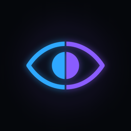

OtherEyes · Petr Paroubek
Podpora / Support
Svět očima jiných. Kamera, která ukáže, jak vidí zvířata i lidé s jiným zrakem. · See the world through other eyes. A camera that shows how animals and people with different vision see.
Kontakt / Contact
Dotazy, chyby a návrhy pište na · Questions, bug reports and suggestions: pparoubek@gmail.com
Odpovídáme obvykle do 2 pracovních dnů. · We usually reply within 2 business days.
Časté dotazy / FAQ
- Kamera ukazuje jen ukázkovou scénu? Povolte přístup ke kameře v Nastavení → OtherEyes.
Only a sample scene is shown? Allow camera access in Settings → OtherEyes. - Fotku nejde uložit? Povolte přidávání do Fotek v Nastavení → OtherEyes → Fotky.
Can't save a photo? Allow adding to Photos in Settings → OtherEyes → Photos. - Koupil jsem Premium na jiném zařízení? V aplikaci otevřete Premium a klepněte na „Obnovit nákupy“.
Bought Premium on another device? Open Premium in the app and tap “Restore purchases”. - Simulace zraku je vzdělávací vizualizace, ne vyšetření. Při potížích navštivte optometristu nebo očního lékaře.
Vision simulations are educational, not an eye exam. If you have problems, see an optometrist or ophthalmologist. - Obraz se nikam neodesílá – vše se zpracuje v telefonu.
Images are never uploaded – everything is processed on your phone.